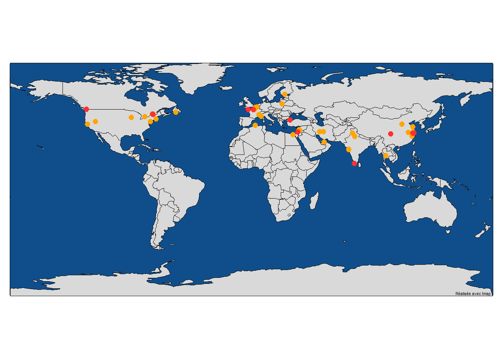

Membres
Membres Actuels du Laboratoire
L’image de Marty est tirée du McGill Tribune.

Suresh Krishna

Professeur agrégé, Départment de Physiologie, McGill.
MBBS (École de Médecine), AIIMS, New Delhi; Doctorat, NYU, New York.
A passé du temps à l’Université Columbia, au CNRS (Lyon), au Centre Allemand de Primates (Goettingen), à l’Institut Max-Planck de Développement Humain (Berlin), avant de venir à McGill (janvier 2020).
; Page Web Personnelle: TBA; Google Scholar
Katarzyna (Kasia) Jurewicz
- Boursière Post-Doctorale, Département de Physiologie, McGill.
- Maîtrise en Psychologie, Université de Varsovie ; Doctorat en Neurobiologie, Institut Nencki de Biologie Expérimentale, Académie Polonaise des Sciences, Varsovie.
- Auparavant, j’étais post-doc dans le laboratoire du Dr Becket Ebitz (Laboratoire de recherche sur le bruit) à l’Université de Montréal. Précédemment, j’ai mené des recherches dans le groupe cortico-thalamique du Dr Ewa Kublik à l’Institut Nencki de biologie expérimentale. Mon travail de doctorat a été supervisé par le professeur Andrzej Wróbel au Laboratoire du Système Visuel de Nencki.
- ; Page Web Personnelle: TBA; Google Scholar
Yohaï-Eliel Berreby
- Étudiant à la Maîtrise, Département de Physiologie, McGill
- Diplôme d’Ingénieur (B. Sc. et M. Sc. combinés en ingénierie), Télécom Paris, Palaiseau, France
- MPSI/MP CPGE (Math/Physique Classes Préparatoires aux Grandes Écoles), Lycée Hoche, Versailles, France
- , GitHub, LinkedIn
Amanda Pruss
- Étudiante à la Maîtrise, Programme Intégré en Neurosciences (PIN), McGill.
- B.A. en Psychologie, McGill.
- J’aimerais aussi appliquer mes connaissances en neurosciences dans un cadre clinique, afin d’aider les personnes souffrant de troubles de la vision, de l’attention ou d’épilepsie.
- , GitHub, LinkedIn
Haoxiang Liu

- Étudiant à la Maîtrise, Département de Physiologie, McGill.
- Étudiant à la Maîtrise en Ingénierie, Génie Biomédical, Université des Sciences et Technologies Électroniques de Chine, Chengdu, Chine.
- B. Ing. en Génie des Réseaux, Université des Sciences et Technologies Électroniques de Chine, Chengdu, Chine.
- , GitHub
Oren Gurevitch
- Étudiant à la Maîtrise, Département de Physiologie, McGill.
- B. Sc. en Neuroscience, Université Bar-Ilan, Ramat Gan, Israel.
- Précédemment, j’étais assistant de recherche sur le traitement sensoriel chez les rats, à l’Université Bar-Ilan, sous la direction du professeur Adam Zaidel. Avant cela, en tant qu’assistant de laboratoire à l’Institut Weizmann des Sciences, j’ai travaillé sur la recherche sur la sclérose en plaques avec le professeur Idit Shachar.
- , GitHub, LinkedIn
Buxin Liao
- Étudiant à la Maîtrise, Département de Physiologie, McGill.
- Étudiant à la Maîtrise en Ingénierie, Génie Biomédical, Université des Sciences et Technologies Électroniques de Chine, Chengdu, Chine.
- B. Ing. en Génie Biomédical, Université du Sud-Est, Nanjing, Chine.
- , GitHub
Anais Rubsamen
- Étudiante au Baccalauréat en Psychologie, Université McGill
- À court terme, je souhaite maîtriser les logiciels, les technologies et les techniques utilisés dans la recherche et les traitements en psychologie, avec un accent particulier sur Python et R. À long terme, je souhaite développer des stratégies pour améliorer les soins aux personnes vivant avec des psychopathologies et des douleurs chroniques, avec un accent particulier sur le TPB.
Pegah Aghili
- Étudiante au Baccalauréat en Physiologie avec une mineure en informatique, Université McGill
- J’ai travaillé avec l’ensemble de données du NWB sur la mémoire sous la supervision du Dr Krishna, et je suis très intéressé à acquérir plus de connaissances dans le domaine des neurosciences computationnelles et cliniques.
Injy Fouda
- Baccalauréat en Arts et Sciences en Science Cognitive, Filière Neurosciences avec Mineure Interdisciplinaire en Sciences de la vie, Université McGill
D’où Venons-Nous?
Anciens Étudiants
- PHGY 396 - Sean Solomon, Sarah Beydoun, Pegah Aghili
- COMP 401 - Nevine Nzabonimpa
- Bourse de Recherche Mackey-Glass – Tim Yang
- Étudiants de 1er Cycle Observateurs - Caden Welch, Max Tweedale, Elisa Niunin